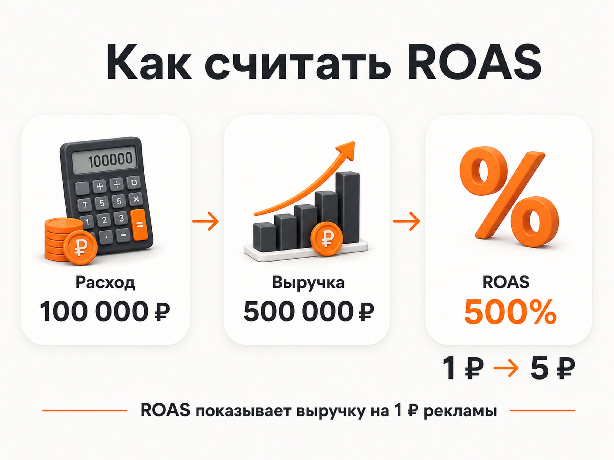
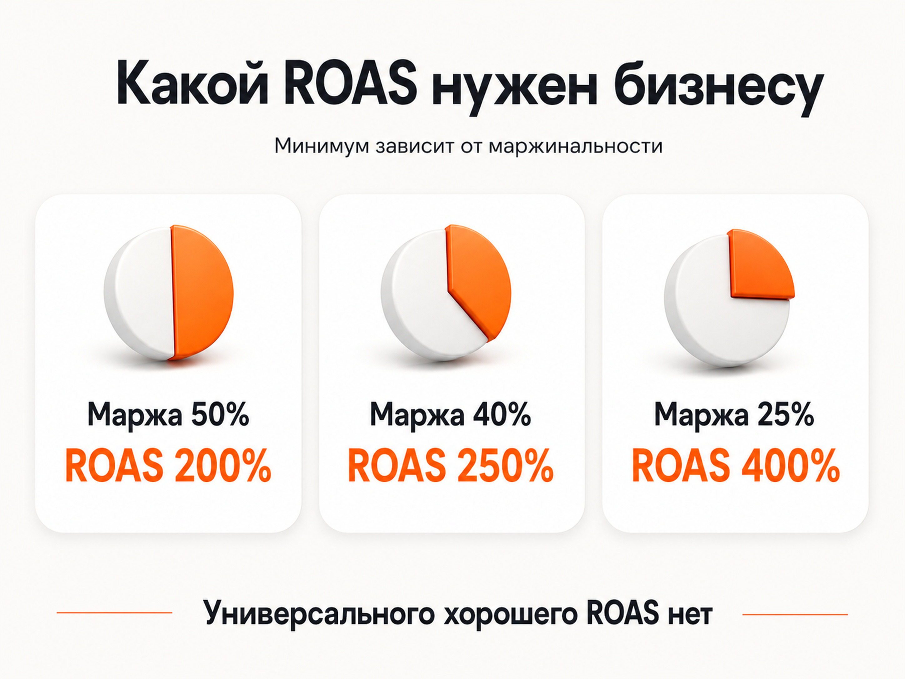
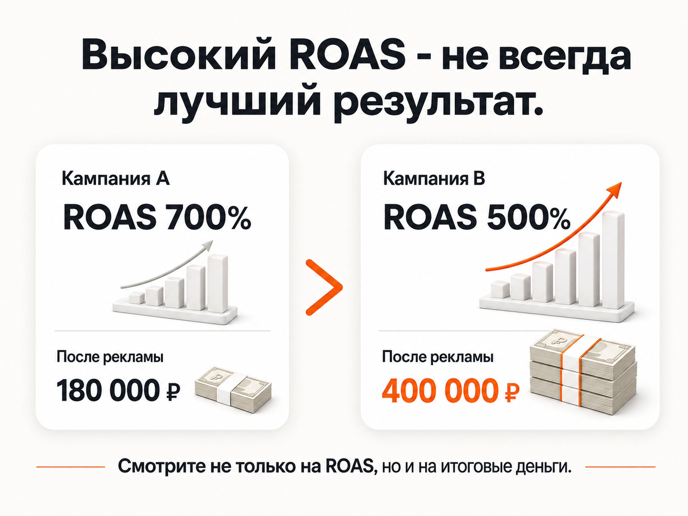

Блог о платном трафике
ROAS в маркетинге: что это и как считать
ROAS в маркетинге показывает, сколько выручки принес каждый рубль, потраченный непосредственно на рекламу.
ROAS в маркетинге показывает, сколько выручки принес каждый рубль, потраченный непосредственно на рекламу.
Формула простая:
ROAS = выручка от рекламы / расходы на рекламу × 100%
Если на рекламу потратили 100 000 ₽ и получили с нее продаж на 500 000 ₽:
500 000 / 100 000 × 100% = 500%
ROAS равен 500%. Другой вариант записи того же результата - ROAS 5x. Это значит, что на каждый вложенный в рекламу рубль приходится 5 рублей выручки.
Но здесь есть принципиальный момент: ROAS показывает возврат рекламных расходов через выручку, а не чистую прибыль бизнеса. Даже ROAS 500% сам по себе еще не говорит, что реклама действительно прибыльна.
Что показывает ROAS
ROAS расшифровывается как Return on Ad Spend, дословно - возврат рекламных расходов.
Показатель связывает две цифры:
- сколько денег потрачено на рекламу;
- сколько выручки связано с этой рекламой.
В отличие от CTR, CPC или стоимости заявки, ROAS находится гораздо ближе к реальному результату бизнеса.
Можно получить дешевые клики, много заявок и хороший коэффициент конверсии, но в итоге продать мало. ROAS позволяет перейти от промежуточных показателей к деньгам.
Особенно удобно использовать ROAS в интернет-магазинах и других проектах, где покупку и ее стоимость можно автоматически связать с источником трафика.
В бизнесе, который получает заявки, расчет тоже возможен, но для него уже требуется связь рекламы с CRM и продажами.
Как рассчитать ROAS
Для расчета нужны рекламные расходы и выручка, которую принес именно этот источник трафика.
Формула:
ROAS = выручка от рекламы / расходы на рекламу × 100%
Например:
- рекламные расходы - 150 000 ₽;
- выручка от клиентов из рекламы - 600 000 ₽.
Получаем:
600 000 / 150 000 × 100% = 400%
ROAS составляет 400%, или 4x.
Каждый рекламный рубль вернулся в виде четырех рублей выручки.
При расчете классического ROAS в расходах учитывается именно рекламный бюджет. Зарплата специалиста, производство товара, аренда, доставка и остальные расходы бизнеса в эту формулу не входят. Поэтому по ROAS нельзя определять чистую прибыль.
Google также использует ROAS как отношение ценности полученных конверсий к рекламным расходам. Для автоматической оптимизации по целевому ROAS рекламной системе требуется передавать ценность конверсий.

Почему ROAS 100% еще не означает окупаемость бизнеса
С цифрой 100% возникает больше всего путаницы.
Допустим:
- на рекламу потратили 100 000 ₽;
- получили продаж на 100 000 ₽.
ROAS:
100 000 / 100 000 × 100% = 100%
Рекламные расходы равны полученной выручке. Но у бизнеса остались себестоимость товара, зарплаты, налоги, логистика и другие затраты.
Поэтому считать ROAS выше 100% автоматически прибыльной рекламой неправильно.
Например, товар продается за 10 000 ₽, а после учета себестоимости и переменных расходов бизнесу остается 4 000 ₽. Маржинальность составляет 40%.
Если для получения этой продажи потратить на рекламу 4 000 ₽, рекламный бюджет уже заберет всю оставшуюся маржу.
ROAS в этом случае:
10 000 / 4 000 × 100% = 250%
Получается, даже при ROAS 250% бизнес в этом упрощенном примере находится только около точки окупаемости рекламных расходов. Остальные затраты компании еще не учтены.
Какой ROAS считается хорошим
Универсального хорошего ROAS не существует.
Для одного бизнеса ROAS 300% может быть отличным результатом. Для другого при той же цифре реклама будет убыточной.
Основной ориентир - экономика конкретного продукта.
При упрощенном расчете минимальный ROAS можно определить через маржинальность:
Минимальный ROAS = 1 / маржинальность × 100%
Если после переменных расходов остается 50% выручки:
1 / 0,5 × 100% = 200%
Если остается 40%:
1 / 0,4 × 100% = 250%
Если остается 25%:
1 / 0,25 × 100% = 400%
Это лишь граница, при которой оставшейся маржи хватает на рекламные расходы. Чтобы бизнес получал прибыль и покрывал остальные затраты, фактический целевой ROAS должен быть выше.
Поэтому искать в интернете абстрактный ответ вроде «нормальный ROAS - 300%» почти бессмысленно. Сначала нужно знать экономику своего бизнеса.

ROAS и ДРР: в чем разница
ROAS и ДРР показывают практически одну и ту же связь между выручкой и рекламными расходами, только с разных сторон.
ROAS:
Выручка / рекламные расходы × 100%
ДРР:
Рекламные расходы / выручка × 100%
Поэтому у хорошего результата ROAS растет, а ДРР снижается.
Например:
| Расход | Выручка | ROAS | ДРР |
|---|---|---|---|
| 100 000 ₽ | 1 000 000 ₽ | 1000% | 10% |
| 100 000 ₽ | 500 000 ₽ | 500% | 20% |
| 100 000 ₽ | 400 000 ₽ | 400% | 25% |
| 100 000 ₽ | 200 000 ₽ | 200% | 50% |
Если известен один показатель, второй легко получить:
ROAS (%) = 10 000 / ДРР (%)
Например, ДРР 20% соответствует ROAS 500%.
В Яндекс Директе для управления рекламой чаще встречается именно ДРР. Если в систему передается доход по целям, Директ может рассчитывать доход и связанные с ним показатели, включая ДРР, ROI и прибыль.
Чем ROAS отличается от ROI и ROMI
Главное отличие ROAS - очень узкий набор затрат.
Он отвечает на вопрос:
сколько выручки принес рекламный бюджет?
Например, потратили в Яндекс Директе 200 000 ₽ и получили 1 000 000 ₽ выручки. ROAS составляет 500%.
Но из этой цифры невозможно понять реальную прибыль компании.
ROI учитывает более широкий набор вложений и используется для оценки возврата инвестиций. В расчете могут появляться себестоимость, производство, логистика и другие расходы.
ROMI обычно используют для оценки маркетинговых инвестиций шире одной рекламной кампании.
Поэтому ROAS удобен для оперативного анализа рекламы, но финансовую эффективность всего бизнеса по нему оценивать нельзя.
Как считать ROAS, если реклама приводит заявки
С интернет-магазином все относительно просто: пользователь перешел по рекламе, оформил заказ на определенную сумму, данные о покупке передались в аналитику.
В услугах и B2B между кликом и деньгами появляется дополнительная воронка:
реклама -> заявка -> целевой лид -> сделка -> выручка
Допустим:
- расходы на рекламу - 200 000 ₽;
- получено 40 заявок;
- из них произошло 8 продаж;
- общая выручка - 1 200 000 ₽.
ROAS:
1 200 000 / 200 000 × 100% = 600%
Стоимость заявки при этом может быть полезной промежуточной метрикой, но для расчета фактического ROAS ее недостаточно.
Если бизнес знает количество лидов, но не знает, сколько денег они принесли, настоящий ROAS посчитать невозможно.
Для такой аналитики желательно передавать в CRM источник обращения и связывать его с дальнейшими статусами сделки. При длинном цикле продажи полезно использовать офлайн-конверсии и передавать данные о состоявшихся продажах обратно в аналитику.
Где брать данные для расчета
Расход обычно получить проще всего. Он есть в рекламном кабинете.
Основная сложность - корректно определить выручку именно от рекламы.
В зависимости от бизнеса данные можно получать из:
- электронной коммерции;
- CRM;
- систем коллтрекинга;
- сквозной аналитики;
- офлайн-конверсий;
- данных Яндекс Метрики.
Яндекс Директ позволяет передавать доход по целям из Метрики, мобильных трекеров и офлайн-конверсий. На основе этих данных в отчетах рассчитываются финансовые показатели рекламы.
Если часть продаж происходит по телефону, через мессенджеры или после долгой работы отдела продаж, смотреть только данные о покупках на сайте недостаточно.
Ошибки при расчете ROAS
Самая опасная ошибка - считать всю выручку компании результатом рекламы.
Если за месяц бизнес получил 2 млн рублей выручки, это еще не означает, что эти 2 млн принес Яндекс Директ. Нужно связать покупки или сделки с конкретным источником.
Есть и другие проблемы:
- учитываются созданные заказы, хотя часть из них потом отменяется;
- продажи одного периода сравниваются с рекламными расходами другого;
- одна покупка приписывается сразу нескольким рекламным источникам;
- не учитываются телефонные и офлайн-продажи;
- сравниваются кампании с разными моделями атрибуции;
- ROAS выше 100% принимается за доказательство прибыльности.
Особенно осторожно нужно работать с бизнесом, где сделка закрывается через несколько недель или месяцев. Расходы августа нельзя механически сравнивать с выручкой августа, если большая часть августовских лидов купит только в сентябре или октябре.
Чем выше ROAS, тем лучше?
Не всегда.
Представим две рекламные кампании.
Первая:
- расход - 100 000 ₽;
- выручка - 700 000 ₽;
- ROAS - 700%.
Вторая:
- расход - 400 000 ₽;
- выручка - 2 000 000 ₽;
- ROAS - 500%.
Если смотреть только на ROAS, первая кампания кажется лучше.
Но при маржинальности 40% первая дает 280 000 ₽ маржи до рекламных расходов. После вычета рекламы остается 180 000 ₽.
Вторая дает 800 000 ₽ маржи. После рекламы остается 400 000 ₽.
У второй кампании ROAS ниже, но денег бизнес получает больше.
Поэтому задача рекламы - не добиться максимально большого процента любой ценой. Слишком жесткое требование к окупаемости может ограничить объем трафика и продаж.
Я обычно смотрю сразу на несколько вещей: объем продаж, рекламные расходы, маржинальность, ROAS или ДРР и итоговую сумму денег, которая остается после привлечения клиентов.

Что в итоге
ROAS показывает, сколько выручки приносит каждый рубль рекламного бюджета.
Формула:
ROAS = выручка от рекламы / расходы на рекламу × 100%
Показатель удобно использовать для сравнения рекламных кампаний, каналов и периодов, если продажи корректно связаны с источниками трафика.
Но оценивать рекламу только по ROAS нельзя. Он не учитывает себестоимость и остальные расходы бизнеса, а высокий процент еще не гарантирует высокую прибыль.
Нормальный ROAS нужно определять от экономики конкретного продукта. В конечном счете бизнесу нужны не красивые проценты в отчете, а продажи, которые оставляют деньги после всех расходов.